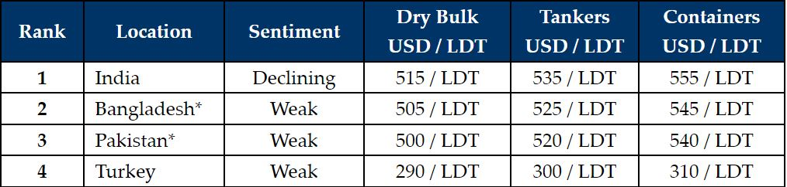

inWeekly Demolition Reports30/10/2023

A few weeks of declines in the global ship recycling markets have finally seen India (the market leaders) catch up to the ongoing drop, by falling about USD 20/LDT in vessel prices themselves, all while Bangladesh and Pakistan continue to struggle to obtain the relevant financing needed to establish workable Letters of Credit (L/Cs).
In a surprising twist of fate however, the recent and unexpected shortage of viable candidates may have inadvertently curtailed a further degradation of recycling sentiments, and those units that are still available in Cash Buyer hands could increasingly see offers that make some of their recent exuberant fixtures, a bigger hassle to deal with.
Meanwhile, an uptick in Container and Dry Bulk freight rates over the recent month(s) have certainly kept the supply of vintage assets away from the various recycling destinations. However, going into 2024, we can expect to see an increase in tonnage as all locations (at least the sub-continent destinations) are expected to be busy once again.
Even most in Alang are hoping (and expecting) that the next batch of sales will likely take place at lower numbers that reflect the true reality of this most recent correction in rates and Recyclers therefore continue to wait-and-watch market movements, before reoffering firm on any tonnage once again.
Finally, the Turkish market remains insulated in a weakened state, with fundamentals still adrift in a sea of negative sentiments and an ongoing shortage of tonnage that is making local business sustainability, an increasingly ambitious affair.
As such, it would be beneficial for all markets (especially Bangladesh and Pakistan) to address / resolve their respective ongoing economic and financial woes, in order to get some stability back into their respective markets. In fact, even though this most recent decline in prices has not been as dramatic as some had feared, firmer offers may still be difficult to come by in the coming week(s).
For week 43 of 2023, GMS demo rankings / pricing for the week are as below.

📄 Download PDF: Ship-recycling-market-insight-week-43-2023-Softening-Sentiments.pdfSource: GMS,Inc. ,https://www.gmsinc.net/gms_new/index.php/web